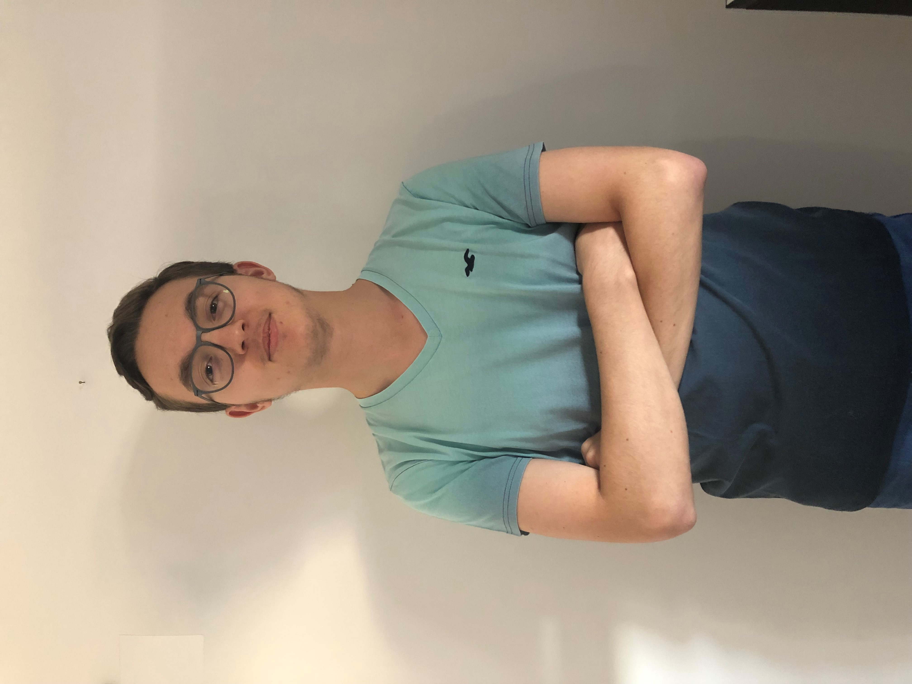

Pour me joindre par mail,
Pour me joindre par téléphone,
Mon adresse à Colmar,
J'ai plusieurs passions, les mangas, les jeux vidéos, la formule 1 et le foot.
J'ai décidé de vous présenter ma passion pour les mangas sur ce site.
Puis viens l'élément déclencheur, le premier confinement de Mars 2020. Durant cette période, quasiment toute la population française était chez elle en permanence. Ce qui inonda le réseau et créea des baisses de puissance afin de pouvoir fournir internet à tout le monde. De plus, ayant déjà rencontré des problèmes de connexion avec Orange. J'ai décidé de m'interressé davantage à ce domaine pour comprendre d'ou venait les pannes, les problèmes et le manque de puissance. De plus, je joue aux jeux vidéos, j'ai donc besoin de connection internet pour pouvoir y jouer confortablement. Le monde du jeu vidéo m'interressait également mais mes compétences en programmation et en graphisme n'était pas suffisante pour réussir dans cette voie.
De plus, les entreprises dans la télécommunication, la cybersécurité et le développement du cloud recherchent activement des techniciens dans ces domaines, ce qui en fait l'un des secteurs ou l'offre d'emploi est la plus importante.
Depuis, j'ai acquis de nombreuses connaisances, appris de nouvelles choses très intéressantes. J'ai également découvert beaucoup de sujet et d'informations que je ne connaissais pas concernant les infrastructures réseaux, la programmation ou encore l'électronique.
Chaque jour, nous voyons de nouvelles compétences, acquérons de nouvelles connaissances. Tout cela rend cette formation très intéressante et pleines de surprises. Je suis très satisfait pour l'instant du BUT, cela me plait beaucoup. J'espère réussir ma première année.